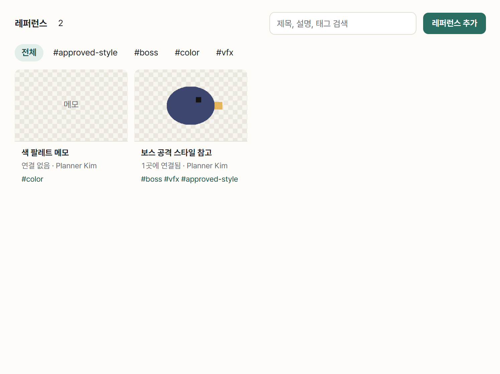
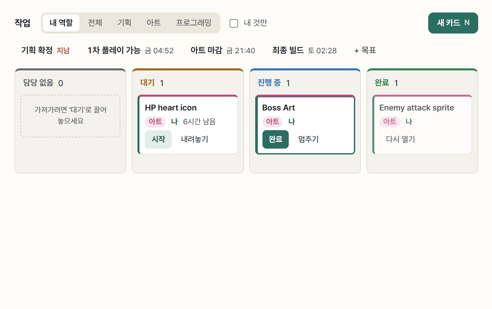
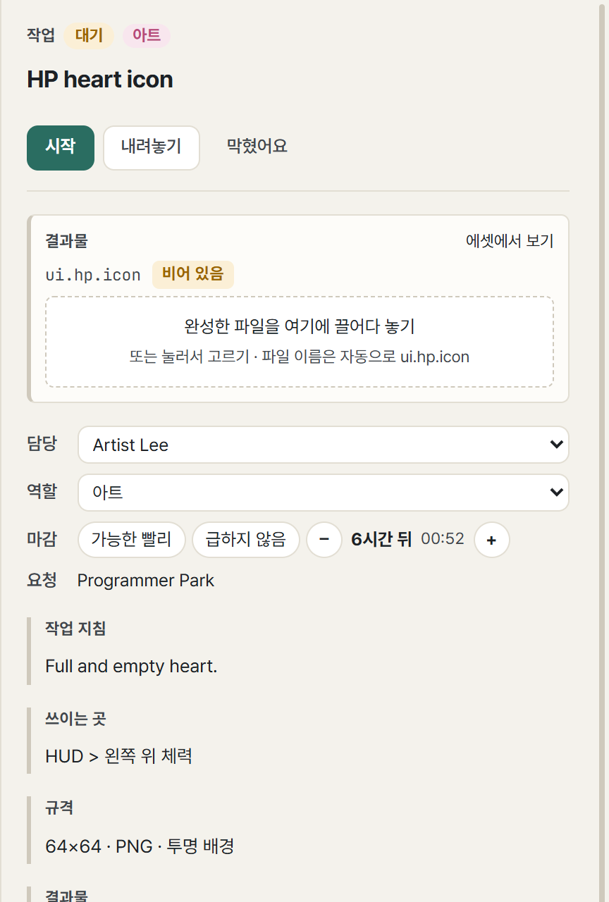
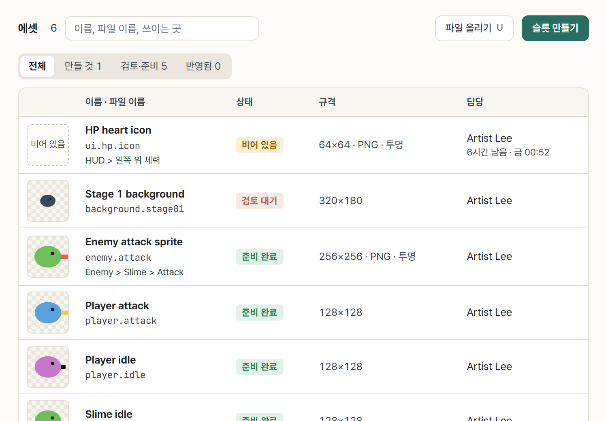
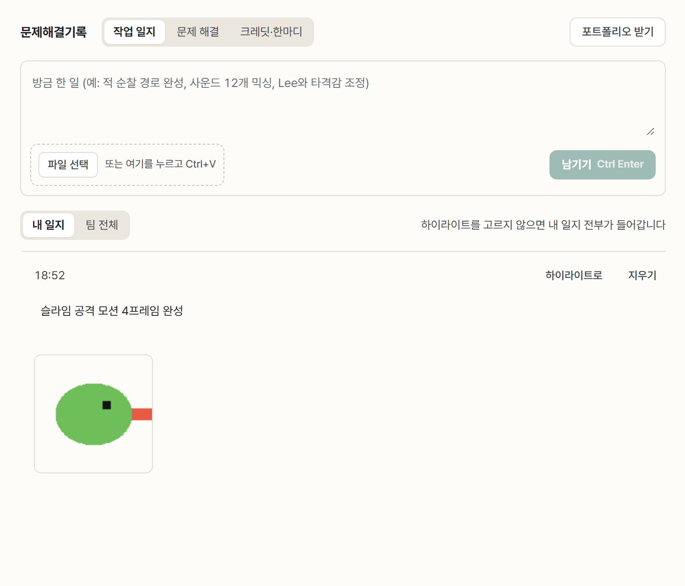

아티스트
무엇을 그려야 하는지는 카드에 있고, 다 그린 그림은 카드의 빈 칸에 끌어 놓으면 됩니다. 파일 이름은 신경 쓰지 않아도 됩니다.
- 회의
- 디자인 가이드
- 레퍼런스 수집·공유
- 회의
- 카드 생성
- 카드 집고 요청 보기 ↔ 작업
- 빈 칸에 끌어 놓기
- 프로그래머가 게임에 반영
시작
- 같은 Wi-Fi에서 방 코드로 참가하고 역할 아트를 고릅니다. 보드와 에셋 화면이 아트 요청 중심으로 먼저 보입니다.
회의 → 디자인 가이드
- 기획·PM과 함께 디자인 가이드 문서를 씁니다. 색, 분위기, 해야 할 것·하지 말 것.
- 무드보드로 분위기를 그림으로 맞춥니다. 영역(캐릭터, 배경, UI)을 나누고 이미지와 메모를 붙입니다.
- 아트·사운드 팩에 캐릭터 무드보드, UI 무드보드, 스프라이트 작업 목록 템플릿이 있습니다.
레퍼런스 수집 → 공유
- 모은 참고 이미지를 레퍼런스 화면에 끌어 놓습니다. 여러 장을 한 번에 놓을 수 있습니다.
- 태그(#보스, #UI)를 달고 관련 카드에 연결하면, 그 카드를 열 때 함께 보입니다.


회의 → 카드 생성 (누구나)
- 기획자·프로그래머·아티스트 누구나 작업 요청 카드(에셋 슬롯)를 만듭니다. 무엇을, 어디에 쓰는지, 대략 크기, 투명 배경, 누가 언제까지.
- 슬롯의 파일 이름(
ui.hp.icon)은 요청하는 사람이 정합니다.
카드 집기 → 요청 보기 ↔ 작업
- 작업 보드에서 아트 카드를 시작해 ‘진행 중’으로 옮깁니다.
- 카드를 열면 작업 지침, 쓰이는 곳, 크기, 연결된 레퍼런스, 다음에 받을 사람이 보입니다.
- 포토샵·아세프라이트에서 작업하고, 내 작업 폴더에 아무 이름으로나 저장하세요.


완료 → 카드의 빈 칸에 끌어 놓기
- 완성한 파일을 카드의 빈 칸에 끌어 놓습니다. 파일 이름이
최종_진짜최종2.png여도 슬롯 이름으로 들어갑니다. - 준비 완료를 누르면 요청한 사람과 프로그래머에게 알림이 갑니다.
- 고친 파일을 같은 칸에 다시 놓으면 새 버전으로 쌓이고, 이전 버전도 남습니다.
- 크기는 대충 맞으면 충분합니다. 엔진에서 프로그래머가 맞춥니다.


프로그래머가 반영 → 게임에서 확인
- 프로그래머가 Unity에 반영을 누르면 그림이 게임 프로젝트의 같은 자리에 들어가고, 상태가 게임에 반영됨이 됩니다.
- 빌드가 올라오면 PLAY로 내 그림이 게임에서 어떻게 보이는지 확인하세요.


검토 · 수정 요청
- 요청한 사람이 승인하면 끝입니다.
- 수정 요청이 오면 이유와 함께 카드가 다시 나에게 돌아옵니다. 고쳐서 같은 칸에 다시 놓으면 됩니다.
작업 일지 (포트폴리오용)
- 문제해결기록 → 작업 일지에 그림 한 장과 한 줄을 남기세요. 예: “슬라임 공격 모션 4프레임 완성”. 아티스트 포트폴리오에서 가장 중요한 과정 기록이 됩니다.
- 막혔던 문제도 문제 해결로 남기세요. 예: “투명 PNG 가장자리 흰 테두리 → 해결 방법”.


마감
- 크레딧에 맡은 일을 적고 팀원 확인을 받습니다.
- 포트폴리오 받기에는 게임에 들어간 결과물이 썸네일로 들어갑니다. 버린 시안은 빠집니다.
AI와 함께
아티스트는 AI 없이도 흐름이 끊기지 않게 만들었습니다. 끌어 놓기 한 번이 AI에게 말하는 것보다 빠르니까요. 연결한다면 도구 묶음은 가장 가벼운 아트입니다.
| 언제 | AI에게 | 사용량 아끼기 |
|---|---|---|
| 작업 전 | “내 아트 카드 보여 줘” | 아트 묶음 |
| 레퍼런스 정리 | “이 폴더 그림들 레퍼런스로 올리고 태그 달아 줘” 준비 중 | 썸네일만, 끝나면 대화 닫기 |
| 하루 끝 | “오늘 올린 거로 일지 써 줘” 준비 중 | 새 대화, 작은 모델 |